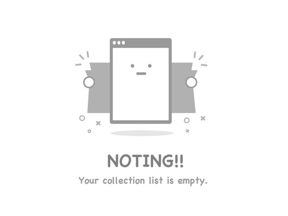

<mat-sidenav-container  class="page-container">
  <mat-sidenav #chatsidenav>

  </mat-sidenav>
  <mat-sidenav-content>
    <ng-container *ngIf="userlist.length === 0">
      
     </ng-container>
     <ng-container *ngIf="userlist.length !== 0">
       <header class='head'>
         <h2>
          DRIVERS LIST
         </h2>
       </header>
       <ul class="list-container">
         <ng-container *ngFor="let userInfo of userlist">
           <li class="ride-container">
             <span class="user-content">{{userInfo.name}}</span>
             <button class="btn" mat-raised-button (click)="OpenChat(userInfo.name, userInfo.uid)">Enter Chat</button>
           </li>
         </ng-container>
       </ul>
     </ng-container>
     <button class="sidenav-button" mat-raised-button (click)="CloseUserListTab()">close nav</button>
  </mat-sidenav-content>

</mat-sidenav-container>

